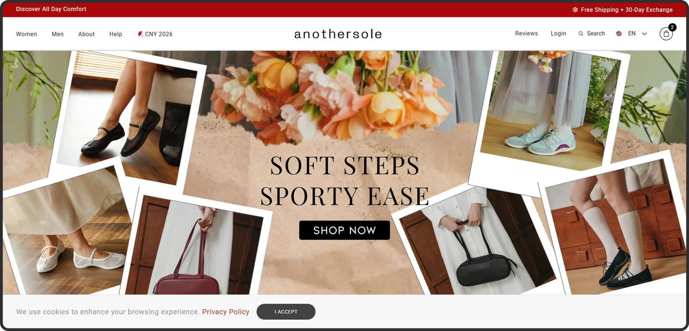
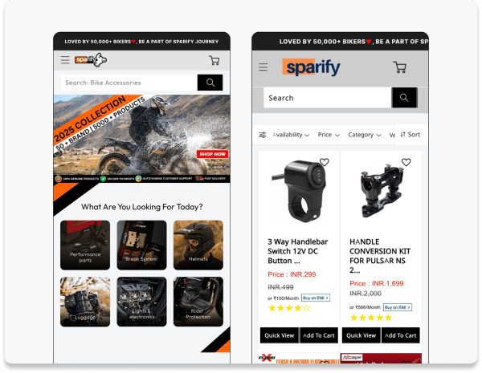
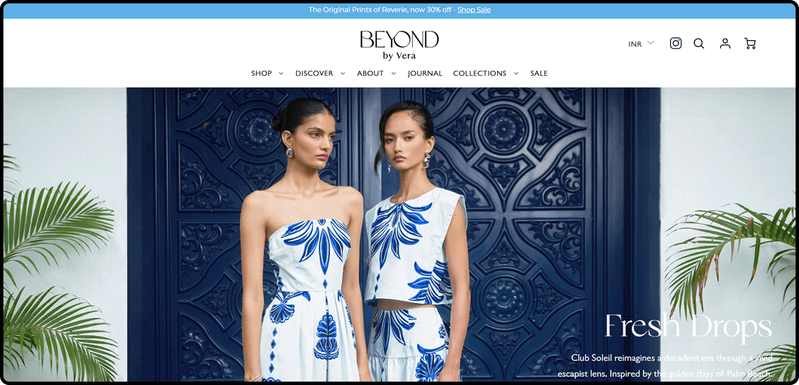
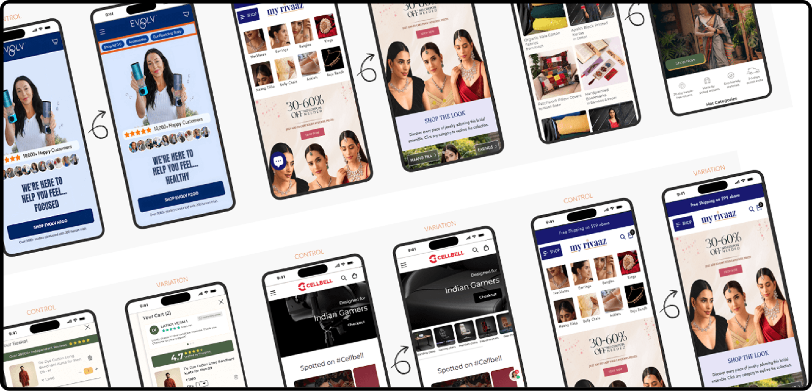
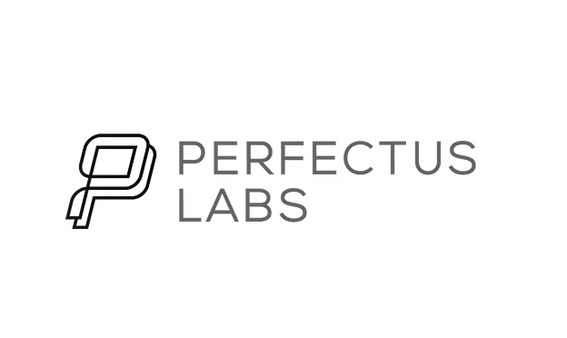
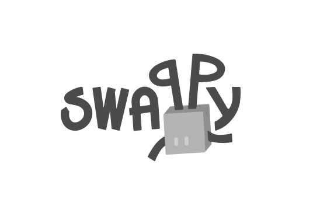
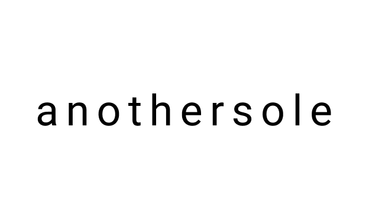

Prepared for Johan Lingvall, Partyking AB
The next win is not more of them, it is converting the ones already there. A short look at partykungen.se from the outside, what happened at brands in a similar position, and where we would start with you.
This is the profile of a store whose traffic problem is largely solved, and almost a third of it is rented. At this volume, conversion is the highest-leverage number you own: a lift of 0.25 points in conversion rate is roughly 1,300 additional orders every month, from visitors you already earned and paid for.
Where the visitors come from
Similarweb, July 2026
A visitor lands on partykungen.se without one clear reason to buy today. Costumes, Oktoberfest gear and gifts all compete for the same front page. The Anothersole program (+185% revenue) fixed exactly this: one guided path per visit intent instead of a homepage trying to be three stores at once.
There is no stock count, countdown or seasonal deadline anywhere on the site, even though your calendar is date-driven: Oktoberfest, Halloween, New Year. Sparify added scarcity nudges and grew revenue 52%. A live countdown on your seasonal categories is the same lever, and you already have the occasions to hang it on.
Email brings in 1.0% of your visits and there is no capture step anywhere on the homepage. Beyond by Vera added a timed recovery popup and grew buy-now clicks 270%. Even a simple first-visit offer would start turning some of your 533K monthly visitors into a list you own instead of traffic you keep renting.
We have run conversion programs for 100+ brands. These three started roughly where you are: healthy traffic, a big catalog, and a store that converted less than it should.

Footwear D2C. We rebuilt product discovery and the shopping journey so visitors found the right product faster, and bought it.

Motorcycle gear, 70,000 riders strong. Spec-led product pages, delivery dates and scarcity nudges turned browsers into buyers who did not wait.

Premium fashion. A slide-out cart drawer and a timed recovery popup (+270% buy-now clicks) turned near-miss visitors into checkouts, without a single discount.
Fully managed. You approve, we run everything else.
Analytics, session recordings, voice of customer
Ranked by expected impact and speed
Our designers and developers, not your roadmap
Every test verified before a visitor sees it
Statistical significance, not gut feeling
Winners roll out, learnings feed the next test
Thirty minutes on what this would look like on partykungen.se. Your first number is already 533,000 a month, and roughly a third of it is bought media. Every experiment that wins makes that spend work harder, permanently.
Book a callcalendly.com/ansuya-convertpolo/30min
info@convertpolo.com · convertpolo.com



